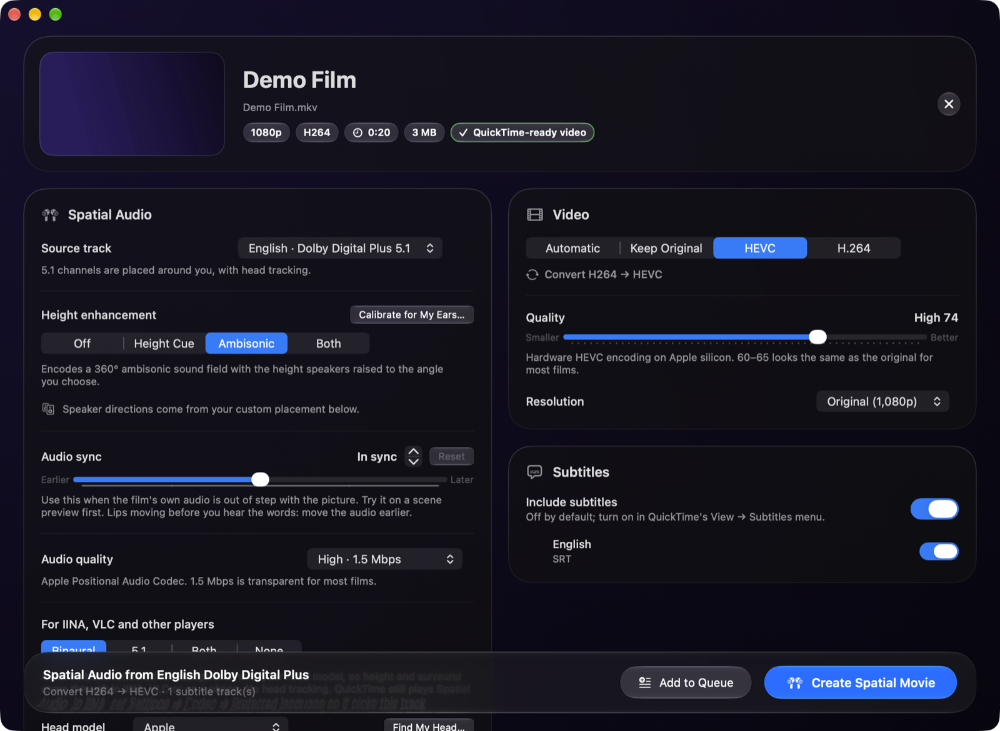
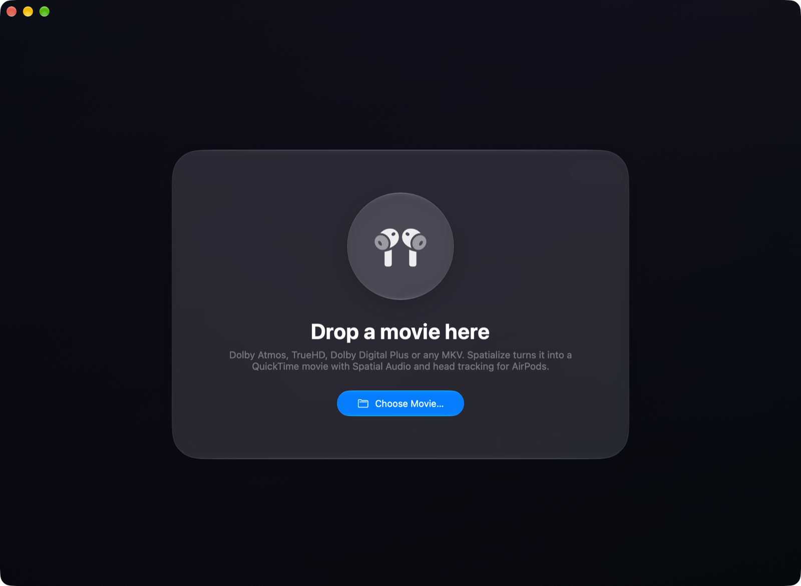
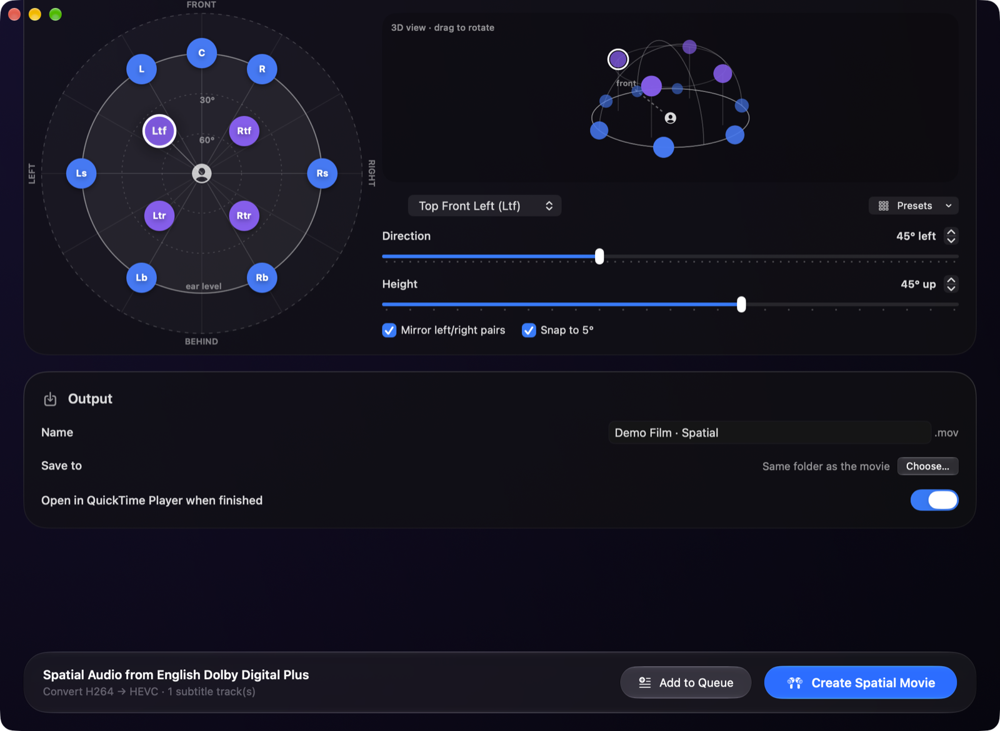

Spatialize turns Dolby Atmos rips into Apple Spatial Audio with head tracking for AirPods. Every object stays where it belongs, even when you turn your head. Free, open source, and all on your Mac.
Apple silicon · macOS 26 or later · TrueHD Atmos & Dolby Digital Plus Atmos
Put on headphones. This page renders a sound in 3D with your browser's head-related audio, the same idea Spatialize uses with Apple's renderer. Drag it behind you or lift it overhead, then turn the virtual head and notice the sound stays put. That's head tracking.
A Mac app with a full Atmos pipeline underneath: decoding, object rendering, Apple's spatial codec, video, subtitles and verification.
Lossless TrueHD Atmos and Dolby Digital Plus JOC decoded into beds and moving objects, then rendered to 7.1.4 or straight into a 360° sound field.
Encoded with APAC, Apple's own spatial codec, so QuickTime and your AirPods do the tracking. No plugins, no players.
Overhead cue EQ, raised ambisonic speakers, and a two-minute calibration that tunes both to your ears.
A listening test compares Apple's head model with measured human heads and picks the one you hear most accurately.
A binaural stereo track rendered with your head model, so IINA, VLC and phones get height and surround too.
Hear a scene around your head in real time with AirPods head tracking and a live map of every Atmos object.
Every conversion is compared with the original at seven points. A steady offset is fixed in seconds, without converting again.
AV1, HEVC and Dolby Vision 7 become 10-bit HDR10 HEVC with mastering metadata, or tone-mapped SDR if you prefer.
Queue, scene previews, headphone EQ, dialogue and night mode, OCR for Blu-ray subtitles, resume after interruptions, Finder and Shortcuts.



Each step is a command-line tool (Rust and Swift), so the whole thing also runs without the app.
Spatialize.zip from the latest release and unzip it.